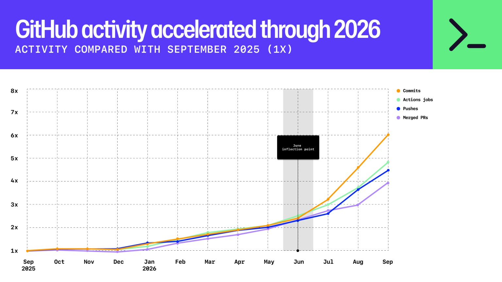

GitHub Octoverse 2026 (Oct 28), github.blog; vendor-reported. Each year is the 12 months ending September 30.
The world has changed
GitHub activity, month by month

From June: Opus 4.8 and Fable 5
GitHub Octoverse 2026 (Oct 28), github.blog; vendor-reported. Activity compared with September 2025 (1×).
The world has changed
Seven people replaced git for Anthropic’s monorepo.
7
people built the new system
5 months
to build it and migrate everyone
10×
more code merged per day, during the migration
And OpenAI’s inference is run by a team of about 20 engineers.
Scion: “Redesigning source control at Anthropic”, anthropic.com/engineering/redesigning-source-control, Oct 2026; vendor-reported. Anthropic notes it is not a general replacement for git.
The world has changed
OpenAI says its AI solved Navier–Stokes, a Millennium Prize problem.
1
of the 7 problems had been officially solved before (Poincaré, 2010)
88 hours
for OpenAI’s agents to reach the result
17 hours
more to write the proof in Lean, so a computer can check it
Gold at the International Math Olympiad was 2025. This is far above IMO level: open research mathematics.
OpenAI, “On the Navier–Stokes Millennium Prize Problem”, openai.com, 8 Sep 2026; vendor-reported. Not yet verified by mathematicians: the Clay Institute says it has “apparently been settled” and considers a solution only after peer-reviewed publication.
But how did we get here?
We’re going to catch up on everything you might or might not have missed, and equip you for the frontier.
We start in 2022. We reach the bleeding edge.
By the end of session 2 you’ll have the skills to work like those teams.
AI in the SDLC / Session 1 of 2
From the artificial neuron to the terminal agent
Eight eras, from ChatGPT to October 2026. Today: eras 1 to 4, the theory underneath.
Who I am
DavitSoftware Development Engineer
@
AWS DMSAWS Database Migration Service
Since end of 2024
A greenfield migration architecture, built as AI took off
My team
The highest AI adoption rate in all of AWS
AI champion
Named in an email from our databases VP to the whole org
1943 → 2026
Eighty years of AI, and the last three are crowded
From 2012, deep learning: then transformers, then ChatGPT
Since ChatGPT: a new Claude model every few weeks
Same tools. Same models.
So why do some people get disproportionate results?
They know what’s underneath. Every era left a layer we still stand on.
How each era works
Every era: what became possible, what changed since, and what still holds
What became possible
The capability, how people worked, and where the human sat
Then and now
What people did then, and what we do instead today
Lessons that still hold
What to keep, even as the tools change
Era 1
ChatGPT
Nov 2022 – Q1 2023
Became possible
Chat LLMs, then GPT-4
The workflow
Copy-paste from ChatGPT; magic prompt templates
The human
Types and integrates; reviews every line
Era 1 · ChatGPT / What is an LLM
An LLM is a function: text in, the next token out
Era 1 · ChatGPT / Writing, one token at a time
Pick a token, append it, run it again
Era 1 · ChatGPT / Tokens
It doesn’t see letters or words. It sees tokens.
Letters
unbelievable
12 pieces for one word. Sequences get long, and cost grows with length.
Words
unbelievable
1 piece, but millions of words, typos and new names: an endless vocabulary.
Tokens
unbelievable
3 common chunks. A vocabulary of 100,000–200,000 pieces covers any text.
Tokens are the unit of everything: the input, the output, the context window, and the bill.
Era 1 · ChatGPT / Tokens
A tokenizer is learned to make common text short
Era 1 · ChatGPT / Tokens
Same sentence, very different cost
Open GPT tokenizers (gpt-tokenizer), running in this page. Claude’s tokenizer is not public.
Era 1 · ChatGPT / Tokens
Every provider tokenizes differently, so price per million tokens isn’t comparable
English
16
16
Japanese
28
18
Georgian
119
25
GPT-4 tokenizer (2023)GPT-4o tokenizer (2024)
Claude uses its own tokenizer, with its own counts. A cheaper price per token can still mean a more expensive answer.
Compare cost per task, not price per token. More on that next time.
?
💬 In the chat
Type a random number between 1 and 10.
Era 1 · ChatGPT / Why 7?
Random, humans, and the model
Era 1 · ChatGPT / Training
Why 7? Training: imitate, then sharpen, then reward
We know how an LLM works.
But how does a chat with an LLM work?
Era 1 · ChatGPT / How a chat works
Every turn, the app sends the whole conversation
Fun fact · 1966
Would you mind leaving the room, please?
Joseph Weizenbaum’s secretary, a few exchanges into a chat with ELIZA, a pattern-matching script she knew was a script.
Fluency is not understanding.
Era 1 · ChatGPT / Then and now
2022–23: copy-paste from ChatGPT, and “prompt engineering”
ThenNow
Prompt engineering was the skill: magic templates
→
Prompt quality matters much less, as long as you convey your intent
Role-play prompts: “You are a world-class engineer…”
→
Little effect on today’s models
“Think step by step” for better reasoning
→
Reasoning models think on their own (since Sep 2024)
Copy code out of the chat, paste it into the editor
→
Agents edit your files and run your tests
Era 1 · ChatGPT / Lessons that still hold
Lessons that still hold
1It’s a function of its input.
Same model, better input, better output. What you give it is your lever.
2On its own, it’s stateless.
It remembers nothing between calls. It works on the state we send it: the conversation, files, instructions.
3Don’t compare price per token.
Know what a token is: every provider counts differently. Compare cost per task.
Era 2
Small context
2023
Became possible
Function calling (Jun); 100k–200k windows
The workflow
Chat with tools; RAG over docs
The human
Reviews every line
It only knows its training data, and that is months old.
So how can it tell you the weather in Tbilisi?
June 2023: function calling.
Era 2 · Small context / Function calling, Jun 2023
Function calling: the model writes the call, the server runs it
{
"type": "tool_result",
"content": "18 °C, sunny"
}
The model still only writes text, now in a shape code can run.
Message shapes from the Claude API, simplified. OpenAI introduced function calling on 13 Jun 2023 with a similar format.
Era 2 · Small context / Function calling, turn by turn
One turn in the chat, two requests to the model
Era 2 · Small context / The problem
Useful. But the more context we added, the worse the answers got.
Era 2 · Small context / Attention
Why: every token looks at every earlier token
Attention is shared out among all earlier tokens, so the more there are, the thinner it is spread, and the cost grows with the square of the length.
Era 2 · Small context / The race
Then the race began: bigger windows, better recall
Recall improved too: today’s models find what is in their window very well.
Line counts are rough: about 10 tokens per line of code.
Era 2 · Small context / Context
Everything is context. Your message is the smallest part.
In Claude Code, run /context to see what is in yours.
Fun fact · 2017
Attention Is All You Need
Eight Google authors. Llion Jones proposed the title, a riff on the Beatles’ “All You Need Is Love”; some co-authors found it too cute.
Modern AI is named after a Beatles song.
Era 2 · Small context / Then and now
2023: tools arrive, and context is the bottleneck
ThenNow
4k–32k windows: nothing fit
→
1M-token windows
RAG for everything: chunk, embed, retrieve the top matches, stuff the prompt
→
For code, agents grep and read. Embeddings still help for concept search and big non-code knowledge
Facts got lost in the middle of long prompts
→
Strong recall, but a focused context still wins
Era 2 · Small context / Lessons that still hold
Lessons that still hold
1It only knows its training data and its context.
For anything newer or private, give it a way to look it up.
2Everything is context. Curate it.
Every token competes for attention. In Claude Code, /context shows what’s in yours.
3A bigger window isn’t a reason to fill it.
Recall is strong now, but a focused context still answers better, faster and cheaper.
Era 3
Tools, agents, MCP
Mid-2023 – 2024
Became possible
Tool calling, Claude 3.5 Sonnet, o1, MCP
The workflow
IDE agents with accept / reject diffs
The human
Reviews every hunk; approves each step
It can call functions and tell us the weather.
How do we make it do real work, in our repo?
We’ll invent what’s missing, one problem at a time. Each step is stamped with when the industry shipped it.
Era 3 · Tools, agents, MCP / Invent the harness
Fun fact · Dec 2023
That’s a deal, and that’s a legally binding offer – no takesies backsies.
Chevrolet of Watsonville’s chatbot, after a user told it to agree with everything. It offered a 2024 Tahoe for $1. Not honored; the bot was pulled.
User input is not policy. That’s why we need the gate.
Era 3 · Tools, agents, MCP / Invent the harness
Era 3 · Tools, agents, MCP / MCP, Nov 2024
MCP: one plug, instead of a cable for every pair
How: a server lists its tools, each with a name and its inputs. The agent shows that list to the model. When the model calls one, the server runs it and returns the result.
Era 3 · Tools, agents, MCP / Invent the harness
Break · 10 minutes
Era 3 · Tools, agents, MCP / Demo
We built it on paper. Here’s what my agent actually sends.
Era 3 · Tools, agents, MCP / Prompt caching, Aug 2024
The prefix rule: keep the beginning identical
Era 3 · Tools, agents, MCP / Then and now
2024: IDE agents, and you approved every step
ThenNow
Accept or reject every hunk in the IDE
→
Classifiers approve; you review the result
Paste files into the chat
→
The agent reads what it needs
Every tool integration built by hand
→
MCP servers for Jira, databases, browsers
Era 3 · Tools, agents, MCP / Lessons that still hold
Lessons that still hold
1The model writes text. The harness does the work.
Tools, the loop, memory, the gate: the harness matters as much as the model.
2Keep the beginning stable.
An unchanged prefix is read from cache at a tenth of the price. That makes long sessions affordable.
3Load only what the task needs.
MCP connects systems and skills bring instructions, both on demand. Everything else costs context.
Era 4
The terminal agent
2025 H1
Became possible
Claude Code (Feb 24), Claude 4, cloud agents (May)
The workflow
A CLI agent in a loop, with CLAUDE.md
The human
Sets the goal, reviews the PR
Era 4 · The terminal agent / February 2025
Vibe coding and Claude Code arrived three weeks apart
Feb 2
Karpathy coins “vibe coding”
Feb 24
Claude Code ships with Claude 3.7 Sonnet
Within months “vibe coding” became “augmented coding”, then “agentic engineering”.
Era 4 · The terminal agent / The harness, as a product
Claude Code is the harness we just invented
What we inventedIn Claude Code
Run tools on our machine→Read, Edit, Bash, Grep
The loop→Runs until done; Esc interrupts
Always-injected file→CLAUDE.md
Manage the context→Caching, /compact, subagents
A gate→Permission prompts and modes
A standard plug→MCP servers
Instructions on demand→Skills, from Oct 2025
Era 4 · The terminal agent / The basic loop
Tests are the success signal
Explore, plan, implement, verify. The loop only closes if the agent can check its own work.
Anthropic, “Claude Code: best practices for agentic coding”, Apr 2025: TDD “becomes even more powerful”.
Era 4 · The terminal agent / The difference a test makes
One bug, three eras
Era 4 · The terminal agent / Memory
CLAUDE.md: only what isn’t obvious
It is added to every request, so every line costs context. If Claude would find it in a minute, delete it.
Same idea, any agent: AGENTS.md (Aug 2025).
# CLAUDE.mdThis is a TypeScript project.Use good variable names.Tests live in tests/.Run tests with `pnpm test:unit`; `pnpm test` hits prod.Never edit src/gen/: it is generated from schema/.Money is integer cents. No floats, ever.Write clean code.
Era 4 · The terminal agent / Skills
Skills: instructions that load only when a task needs them
Era 4 · The terminal agent / Skills in practice
Skills in practice: the description is the trigger
A skill is a folder with a SKILL.md. Until a task matches, Claude reads only its description.
So write the description like a search query: when to use it, in the words a user would type.
# .claude/skills/release-notes/SKILL.md
---
name: release-notes
description: Write release notes from merged PRs.
Use when asked for a changelog or release notes.
---
1. List PRs merged since the last tag: `gh pr list …`
2. Group them: features, fixes, internal.
3. One line each, user-facing words, no PR jargon.
4. End with upgrade notes if any config changed.
Era 4 · The terminal agent / A skill worth having
/verify: prove it by running it, not by reading it
1Pin the question
Something you can observe: which input, what counts as yes
2Run it
The real program, on that input
3Read the output
What a user would check, quoted line by line
4Before and after
For a change: the same input, old code and new
5Answer with evidence
The verdict, the command, the lines that prove it
Tests check what someone thought of. /verify looks at what actually comes out.
In the workshop, the output is a game screen
Fun fact · spring 2025
The shop agent offered to deliver in person, in a blue blazer and red tie.
Project Vend, Anthropic with Andon Labs: Claude ran an office shop for a month. It sold tungsten cubes below cost and invented a Venmo account.
Long-running agents need a harness: memory, checks, limits.
Workshop · Set up
First, get the game running
1Node 18+, Chrome or Edge, and git. Optional: the Herdr app, for the race side by side
3node GAIA-workshop/workshop1/setup.mjs, until it says ready
4cd garden-guard, then claude once: “Yes, I trust this folder”
Workshop · 20 minutes
Write /verify, then race it against Claude without it
1
Play it first
Open index.html, plant a few towers and start a wave, so you know what Claude should see.
2
/verify for the game
Write the skill. In Herdr, ask Claude with no skills and Claude with yours the same question, and watch their game windows as they play.
plainClaude with no skills
yoursClaude with your skills
ask bothask both › During wave 2, does the HUD …
playsyours step 4/9 {"until": …}played so far: plain 0yours 3
With the Herdr app open, in the garden-guard repo: node race.mjs. Game windows open on each Claude’s side.
Era 4 · The terminal agent / Then and now
2025 H1: the agent moves into the terminal
ThenNow
Vibe coding: accept everything, hope it works
→
Agentic engineering: tests, review, ownership
Start a message with # to save a memory
→
Claude writes memories itself (Feb 2026)
Custom slash commands
→
Skills, with commands merged in (Jan 2026)
Era 4 · The terminal agent / Lessons that still hold
Lessons that still hold
1Give it a way to check its work.
Tests are the success signal. Without them the loop can’t tell it’s done.
2Write down only what isn’t obvious.
CLAUDE.md is in every request, so every line costs context.
3Learn the principle, not the trick.
The # memory shortcut lived nine months. The idea behind it is still here.
The skeptic’s corner
Four objections you might leave with
“I can’t review this much code.”
“I can’t review this much code.”You review intent and evidence, not lines. Session 2 builds the gates that make that safe.
“Juniors won’t learn the craft.”
“Juniors won’t learn the craft.”The craft matters more with agents: intermediate-or-above users reach verified success 28–33% of the time, novices 15%.
“It’s too expensive.”
“It’s too expensive.”Most tokens in a long session are cache reads at a tenth of the price. Session 2: cost per task.
“Security won’t allow it.”
“Security won’t allow it.”Enforcement and sandboxing, not trust. Next time.
Expertise data: Anthropic, “Agentic coding and persistent returns to expertise”, Jun 2026; vendor-reported.
Monday moves
Three things to do tomorrow
1When it acts weird, run /context
2Write a 10-line CLAUDE.md: only what isn’t obvious
3Turn one weekly task into a skill
Close / Session 2
Next time: practical. How the best teams work today.
Make it reliable
Hooks, enforcement, specs
Many agents
Subagents, worktrees, workflows
The bleeding edge
Cost, review by intent, what’s next
HomeworkAsk Claude something you don’t think it can do.